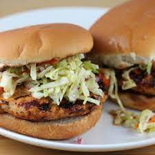

Natasha's Chicken Burger

The best Chicken Burger in town!
Natasha is my eldest daughter, and her eyes light up when I announce
we're having these for dinner. While my husband and I eat 1 or 2 each,
she easily finishes at least 3! The onion can be finely chopped, but
with three kids, we prefer grating it so as to hide it.
I usually serve these with mashed potatoes and Caesar salad for a
very comforting meal! Extra-lean ground chicken can be substituted
with ground turkey with great results.
Ingredients
- 1 pound extra-lean ground chicken
- ½ cup Italian-seasoned bread crumbs, divided
- ½ small onion, finely grated
- 1 egg
- 2 cloves garlic, minced
- salt and ground black pepper to taste
- 2 teaspoons olive oil
Step
- Mix ground chicken, 1/4 cup bread crumbs, onion, egg,
garlic, salt, and black pepper in a bowl. Moisten hands
and shape chicken mixture, 2 tablespoons at a time, into
flat, oval-shaped patties.
- Spread remaining 1/4 cup bread crumbs into a shallow dish.
Roll patties in bread crumbs to coat.
- Heat olive oil in a large skillet over medium-high heat.
- Cook patties in hot oil until deep brown in color on the
bottom, 5 to 6 minutes. Turn patties and cook until other
side is browned, 3 to 4 minutes more.